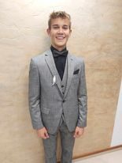

O mně
Ahoj, já jsem Petr Štanglica! Rád vítám nové lidi ve světě mých dobrodružství. Právě oslavuji 17. rok svého života a mé vášně směřují do dvou hlavních sfér: fotbalu a světa informačních technologií. Fotbal je mou láskou a najdeš mě často na hřišti, jak se s vášní ponořuji do hry. S každým kopnutím míče se otevírá nový svět možností a radosti. Je to nejen sport, ale i prostor pro skvělá přátelství a týmovou spolupráci. Kromě toho jsem studentem na IT škole v Hradci Králové, kde prozkoumávám svět kódů a technologií. Fascinuje mě, jak se digitální svět prolíná s fyzickým, a rád objevuji novinky a trendy v oblasti IT. Můj smysl pro humor je neoddělitelnou součástí mého života, ať už se bavíme na hřišti nebo v digitálním světě. Když nejsem pohroužený do fotbalu nebo studia, najdeš mě s knihou v ruce, sledujícího oblíbený fotbalový zápas, nebo prostě relaxujícího s dobrou hudbou. Jsem otevřený novým zkušenostem a rád poznávám inspirativní lidi. Těším se na setkání s tebou a možnost sdílet příběhy, zážitky a vášně, které nás spojují!
Fotbalova kariera
Fotbal jsem začal hrát ve 4 letech a hraji ho do dnes ,ale už v tom nemám takovou radost jako když jsem začínal. připojil jsem se do místního klubu ,který máme ve Vysokém Mýtě a už jsem začal chodit na intenzivnější tréninky také jsem začal jsezdit na místní turnaje a soutěže pro mladší věkovou kategorii. V 10 letech jsem začal jezdit do fotbalové akademie do Ústí nad Orlicí tam jsem za ně odehrál pár zázápasů cca asi 2 roky jsem tam jezdil. Ve 12 - 15 letech jsem dostal nabídku hrát za Pardubic tak jsme se domluvili s rodiči s trenéry a vyšlo to nastoupil jse hrát za pardubice tudíž jsem tam nastoupil i na akademii. V 9 třídě jsem skončil v pardubicích kvůi střední škole a vrátil jsem se zpět do Vysokého Mýto pěkně domů. Ovšem doma ještě nekončíme v 16 letech jsem začal hrát futsal (fotbal v hale) za Nejzbach Vysoké Mýto a minulý rok se nám povedlo vyhrát mistry České Republiky. V 17 letech což je přítomnost jsem stále ve Vysokém Mýtě a stále hraji Futsal.